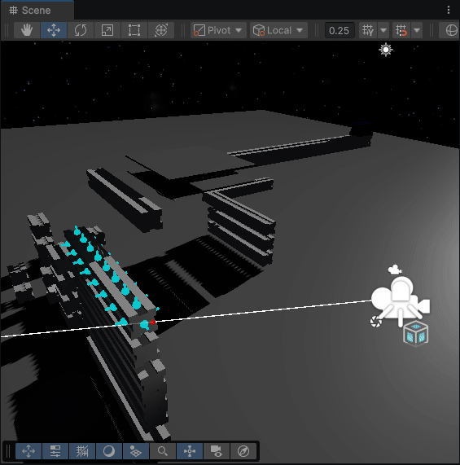

Internal Projects
Site-12
Testing the interaction system, and its various sounds
Testing doors, lockers, and interactables like the keypad.
One of my few Unity games.
An SCP game that was floating around in my head for a few years.
I only got to basic interactions before running into multiple roadblocks with level development in Unity.
An SCP game that was floating around in my head for a few years.
I only got to basic interactions before running into multiple roadblocks with level development in Unity.
Sandgen 5 Game (Untitled)
Testing the new lighting, and audio.
 A bot pathfinding, and the pathfinding layer show in red and green.
A bot pathfinding, and the pathfinding layer show in red and green.Using A-Star pathfinding with tile movement costs for getting the actual path.
A game about digging, I took inspiration from the Flash game Motherload.
While not finished, this one is running on the latest iteration of Sandgen and features:
- real-time lighting,
- real-time pathfinding generation,
- biome-based world generation,
- placing of images as elements,
- multithreading,
- and at one point, rigid body physics.
It also uses lazy initialization and partial unloading of chunks. infinite worlds are possible but not actively supported.
Made with my Game Engine SFML-GE.
While not finished, this one is running on the latest iteration of Sandgen and features:
- real-time lighting,
- real-time pathfinding generation,
- biome-based world generation,
- placing of images as elements,
- multithreading,
- and at one point, rigid body physics.
It also uses lazy initialization and partial unloading of chunks. infinite worlds are possible but not actively supported.
Made with my Game Engine SFML-GE.
Starbase Remake

Welding of multiple assemblies, then destroying all welds.
Improved graphics for welding
Showcasing an assembly splitting upon destruction of a parts welds.
loose, unwelded parts snapping off when moving past a certain speed.
 Nailing a plate into two beams
Nailing a plate into two beams
Another Unity game!
Made over a week-ish.
Unity's built-in constraints, to put it bluntly, suck ass.
To get around this, I used Unity's compound collider system, it basically allows many colliders to act and move as one big rigid body.
The issue is the only way to do this is to remove all rigidbodies from two objects (and sub-objects) you want to weld, move them in place, and then parent them to the same rigidbody game object.
The assembly system I made basically handled all of that, kept track of welds, and validated connected parts.
In my assembly system there were 3 types of constraints: a weld, a loose weld (that would break when moving fast), and a nail.
Whenever the autoweld feature was used, In order to check for possible nearby welds, i would have to check the distance of each weld to each other.
To not spend 2 minutes waiting for sqrt operations for distance checks i made a custom Burst job (that uses SIMD instructions), to process entire arrays of weld point vectors then output their distances into another array.
then i just had to check the newly caluclated distances.
The building system in general, was inspired heavily by the game Starbase.
But the implementation was done painfully and slowly by myself without any help.
Made over a week-ish.
Unity's built-in constraints, to put it bluntly, suck ass.
To get around this, I used Unity's compound collider system, it basically allows many colliders to act and move as one big rigid body.
The issue is the only way to do this is to remove all rigidbodies from two objects (and sub-objects) you want to weld, move them in place, and then parent them to the same rigidbody game object.
The assembly system I made basically handled all of that, kept track of welds, and validated connected parts.
In my assembly system there were 3 types of constraints: a weld, a loose weld (that would break when moving fast), and a nail.
Whenever the autoweld feature was used, In order to check for possible nearby welds, i would have to check the distance of each weld to each other.
To not spend 2 minutes waiting for sqrt operations for distance checks i made a custom Burst job (that uses SIMD instructions), to process entire arrays of weld point vectors then output their distances into another array.
then i just had to check the newly caluclated distances.
The building system in general, was inspired heavily by the game Starbase.
But the implementation was done painfully and slowly by myself without any help.
Exponetia
A Round of exponentia.
A Rouge-Like Deck builder, where you chain spells to deal damage
This one was made over a week as well, and is one of the more complete games of mine.
Almost every card has a combo with another, and each combo adds either a mult or flat damage.
Made with my Game Engine SFML-GE.
This one was made over a week as well, and is one of the more complete games of mine.
Almost every card has a combo with another, and each combo adds either a mult or flat damage.
Made with my Game Engine SFML-GE.
Raymarch-Testin
First version of de-noiser.
Noisy render of glowing bits in the dark
using the first version of the de-noiser
using the first version of the de-noiser
Last version of de-noiser.
Using a normal buffer i blured each face of the cubes on screen seperately keeping crisp edges.
a low-res box-blur pass was used, as gaussian looked odd.
Ran at about 20-30fps.
Using a normal buffer i blured each face of the cubes on screen seperately keeping crisp edges.
a low-res box-blur pass was used, as gaussian looked odd.
Ran at about 20-30fps.
Aw, look! Baby's first memory access violation!
Built using my 3D version of SFML-GE, Hewn.
Hewn runs on and has access to raw OpenGL, and this project used that to its full advantage
What was originaly just raymarching a few spheres, turned into a bunch of tests with real-time raytracing.
Then it pivoted back to raymarching, but with alot more cubes.
Hewn runs on and has access to raw OpenGL, and this project used that to its full advantage
What was originaly just raymarching a few spheres, turned into a bunch of tests with real-time raytracing.
Then it pivoted back to raymarching, but with alot more cubes.
Life 2
A hand picked, Semi-Stable configuration of forces between cells.
This version actually supported clipboard codes for diffrent presets of cell forces.
This version actually supported clipboard codes for diffrent presets of cell forces.
A Real-time Particle Life simulation, written in C# instead of Lua.
Surprisingly, it is not multithreaded.
Made with my Game Engine SFML-GE.
Surprisingly, it is not multithreaded.
Made with my Game Engine SFML-GE.
Gun Knight
Showcasing the parry's impact frames, as well as some of the basic destruction effects.
Made in Godot over the course of 3-ish days.
Has a couple custom shaders that are unbelievably subtle, and cannot be seen here
Has a couple custom shaders that are unbelievably subtle, and cannot be seen here